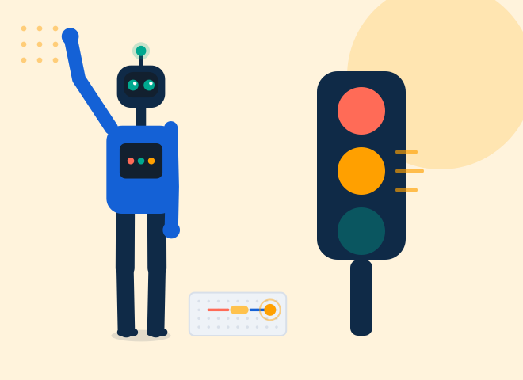
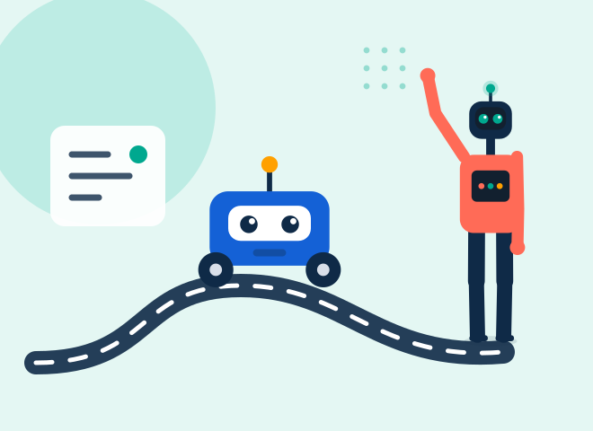

Material
Kits para el salón
Un kit por grupo de trabajo, con organizador rígido, repuestos e inventario a cargo de LedKid. El equipo se queda en el colegio.
Ver el listadoDe primero primaria a sexto diversificado, con material propio, simulador en línea y el docente del colegio ya capacitado. Un solo programa que crece con el alumno durante toda su escolaridad.
BOTITO recorre lo que el alumno usa de verdad: los juegos de práctica de primaria, el editor de circuitos con su simulación eléctrica, la programación por bloques y por código sobre el ESP32, el flasheo a una placa real y la electrónica digital de diversificado. Todo lo que se ve son pantallas reales —grabadas del simulador funcionando, no una recreación.
Agendar una visita
Un kit por grupo de trabajo, con organizador rígido, repuestos e inventario a cargo de LedKid. El equipo se queda en el colegio.
Ver el listadoEl alumno arma y programa circuitos en el navegador, sin instalar nada. No es una animación: resuelve la electricidad de verdad, y si se pasa de corriente la pieza se calienta y se quema — en pantalla, no en la mesa. Después, el mismo programa se manda a la placa real por cable. Y no está solo: BOTITO lo acompaña en cada lección.
Probar el simulador
Capacitación antes de arrancar, planificación clase por clase y soporte durante todo el ciclo. No se requiere personal especializado.
Cómo funcionaUn kit por grupo de trabajo, en organizador rígido. Los repuestos y el inventario corren por cuenta de LedKid, y el equipo se queda en el colegio.
Todo lo del kit se puede montar antes en el simulador, así que el alumno llega a la mesa sabiendo qué va conectado a qué. El costo se calcula con la matrícula y la colegiatura de cada colegio, y se arma en la reunión de presentación.

Es el mismo que el alumno ve dentro del simulador: le explica cada lección, le escucha por el micrófono y le celebra cuando el circuito por fin enciende. Aquí sale igual que allá, porque es exactamente el mismo.
millis(), I2C y telemetría, hasta una estación de monitoreo como proyecto final.Se financia con una cuota mensual incluida en la colegiatura durante los diez meses del ciclo. La institución no adquiere equipo ni contrata personal técnico.
“Queríamos ofrecer robótica desde hace años. El problema nunca fue el interés de los alumnos: era el equipo y quién iba a darla. Aquí llegan las dos cosas resueltas.”
La cuota se calcula con la matrícula y la colegiatura de cada colegio. Se arma en la reunión de presentación.
Un mes. Semana 1: llevamos los kits al colegio y revisamos los datos de matrícula con la dirección. Semana 2: se firma el convenio, con grados, cuota y distribución de ingresos. Semanas 3 y 4: capacitamos al docente asignado y entregamos kits y accesos. Mes 2: primera clase, con acompañamiento presencial en las primeras sesiones.
No. Capacitamos al docente que la institución asigne —habitualmente el de computación o ciencias— y entregamos la planificación completa del ciclo, clase por clase, junto con la guía de evaluación. El soporte continúa disponible todo el año.
Una por grupo de trabajo es suficiente. El simulador funciona en el navegador, no exige instalación ni equipo nuevo, y opera en las computadoras que el colegio ya tiene.
Sí. El programa opera a nivel nacional: el acompañamiento presencial se calendariza por visitas y el seguimiento restante se realiza en línea.
Una reunión de treinta minutos con el material a la vista. Respondemos en un plazo máximo de 48 horas hábiles.